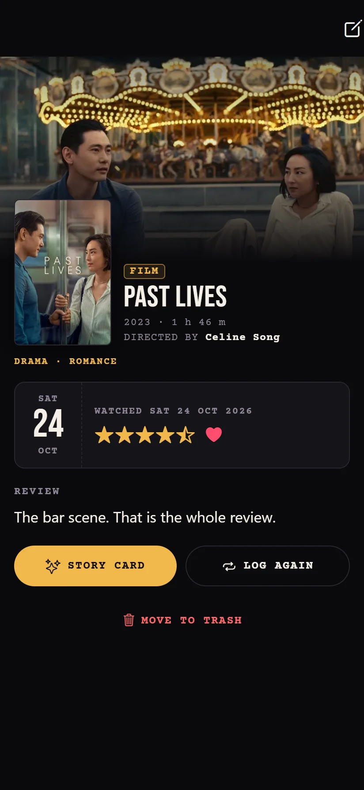

Log it in seconds
Search films, series and anime in one place, or share a link from IMDb, Letterboxd or TMDB. Then slide across the stars.
- Half stars, a heart and a review
- Rewatches, seasons and episodes
- Who you watched it with, and spoilers hidden
